The outdoor time tracker for iPhone
Outside
Timer
For people who like being outside and decided to start tracking their hours.
See how it works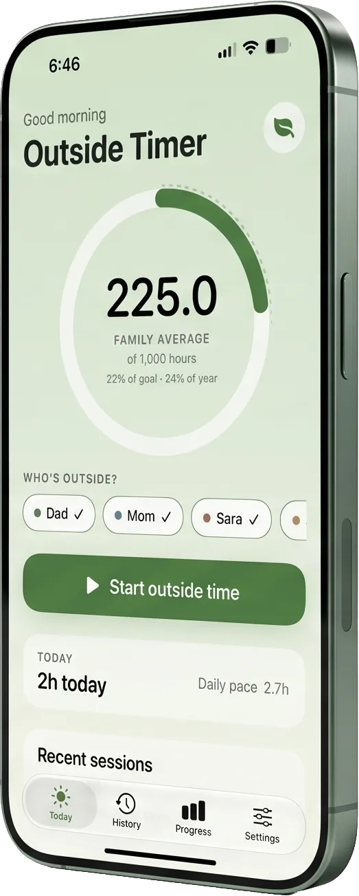
The shared timer
One timer.
The whole family.
Tap who’s heading out, then start the timer. Everyone you picked gets credit for the same outing. On supported iPhones, a Live Activity keeps the timer handy on the Lock Screen.
It’s not complicated. That’s kind of the point.
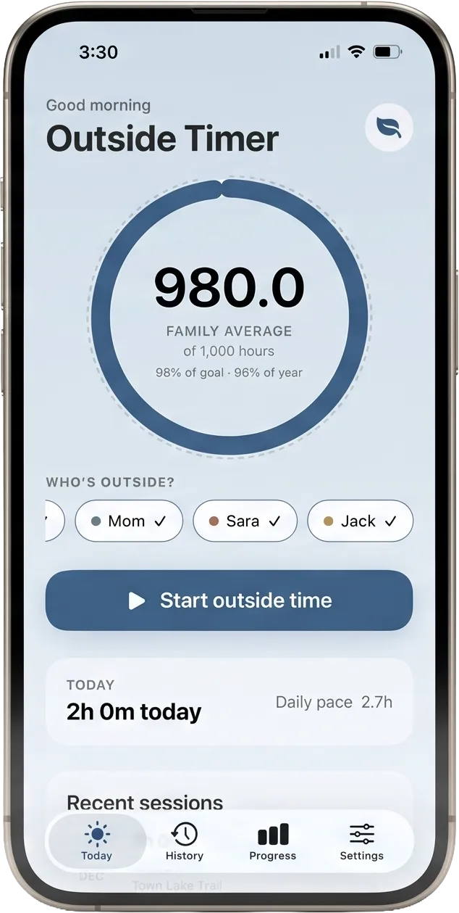
Why we made it
We made Outside Timer because we needed it.
Our family started tracking outdoor time two years ago. The apps we tried felt limited, cost more than we wanted to spend, or made it hard to track everyone at once. So we built the timer we wanted for our own family.
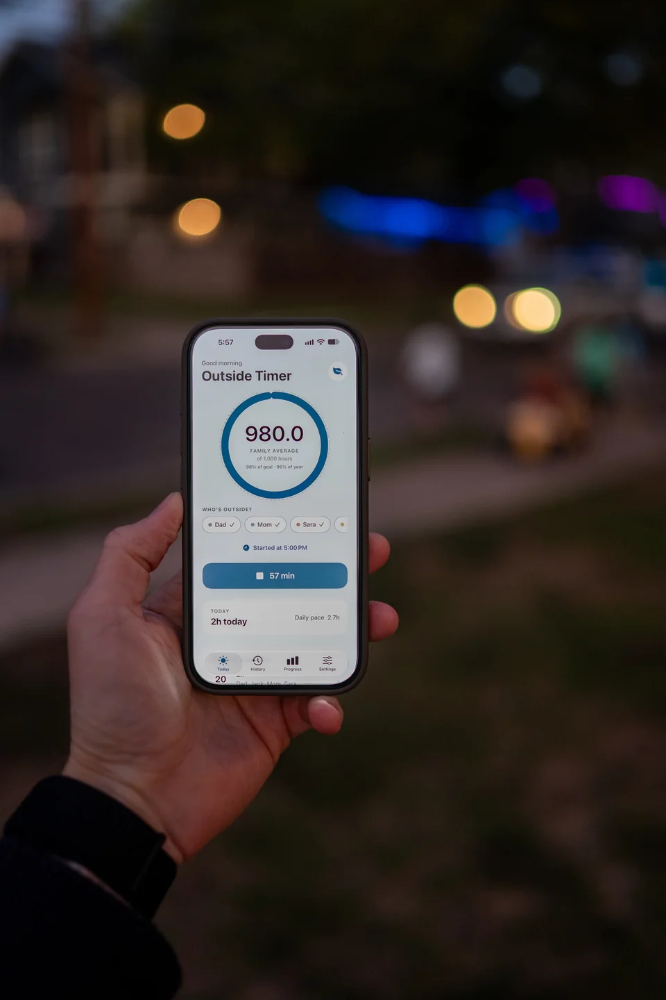
Your yearly goal
Pick a number.
Any number.
Set a yearly goal that fits your family, then see individual totals, your family average, and how everyone’s pacing.
Progress & history
Every little outing adds up.
See where the hours went, month by month. Forgot to start the timer? Add the outing later. Edit its time or add a location and a note so you’ll remember where you went. Export completed outings as a CSV whenever you want a copy.
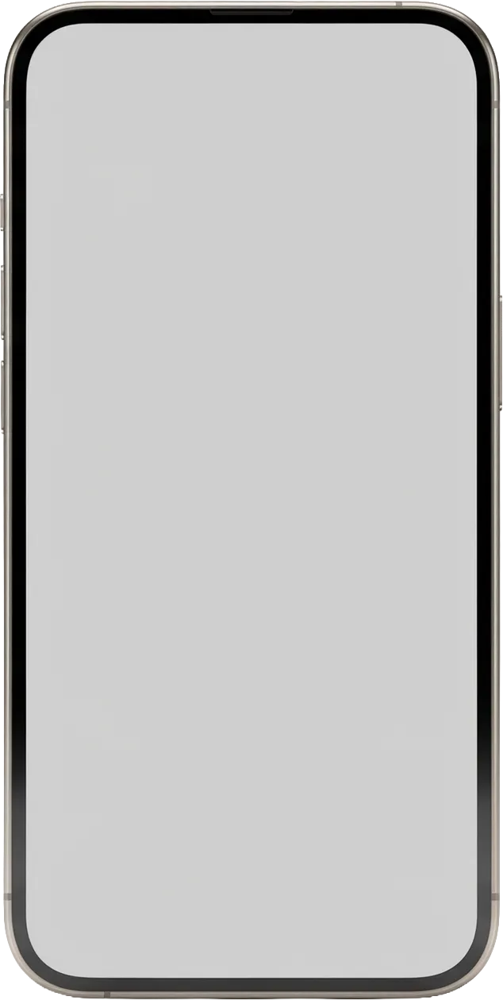
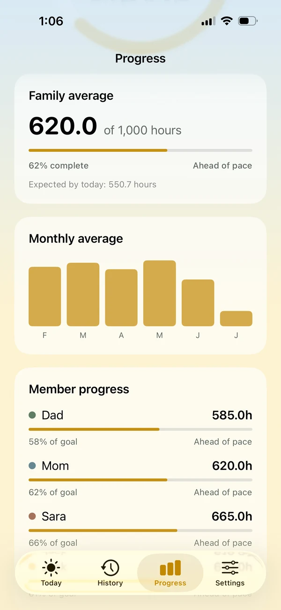
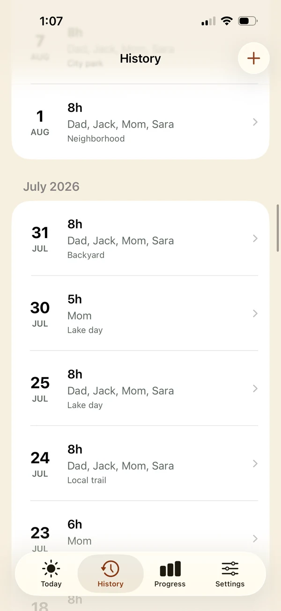
App privacy
This is a timer app.
It has no idea who you are.
Your family’s data stays on your device. The app has no ads and collects no analytics.
No subscription. No account. Just outside time.
Read the privacy policySeasonal colors
A change of scenery.
Outside Timer changes its colors with the seasons. Let the calendar pick the palette, or choose a favorite yourself.
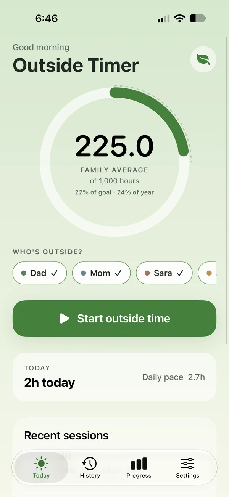
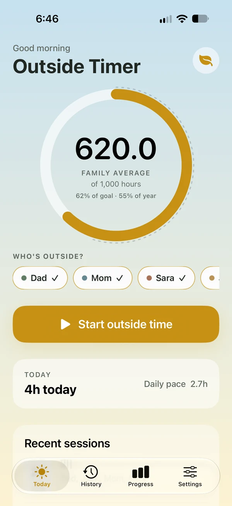
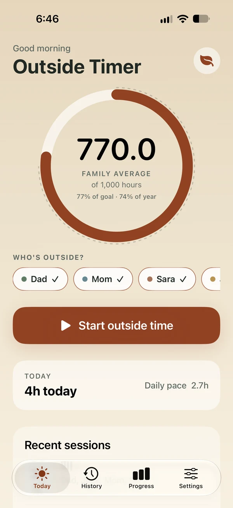
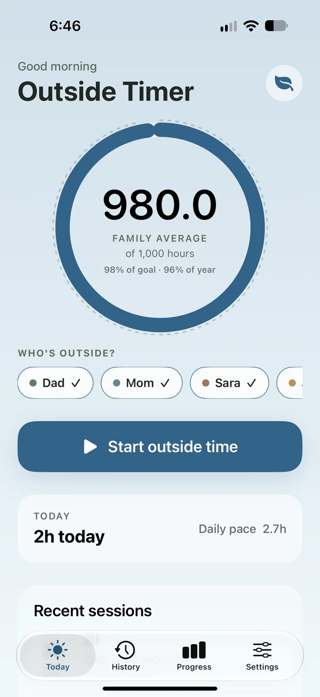
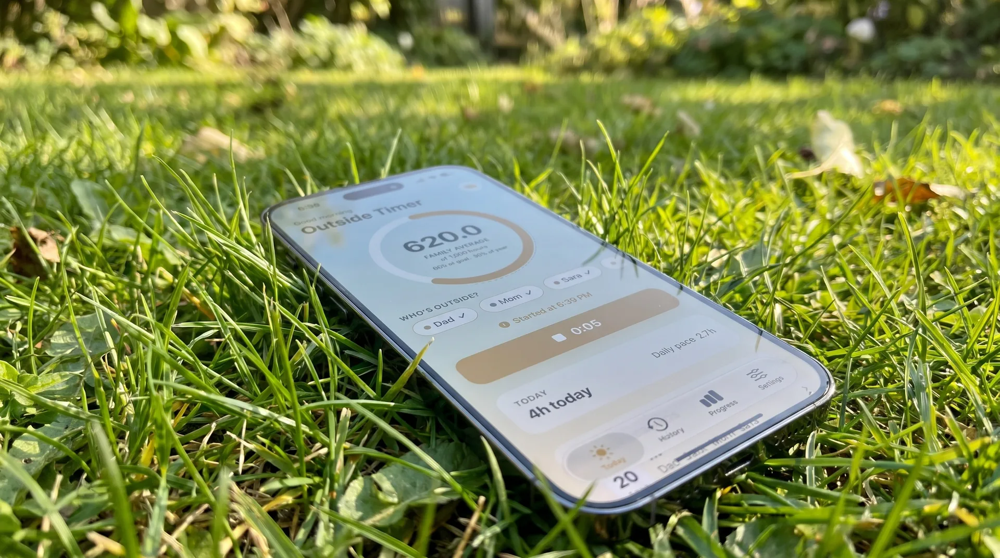
Engineered for environments with trees.
Start the timer.
Put your phone down.
We made an app for putting your phone down. Optimized for grass, trails, backyards, lakes, and places with poor Wi-Fi.
Download on the App Store